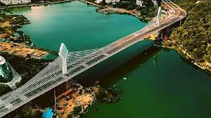

Durgam Cheruvu
Durgam Cheruvu, also known as the Secret Lake, is a serene lake located in the heart of Hyderabad. It offers boating facilities and is surrounded by rocky terrain and lush greenery.
Location: Road No. 46, Jubilee Hills, Hyderabad, Telangana, India
Ticket Price: Free entry; charges applicable for boating
Transportation: Accessible by road, nearest metro station is Jubilee Hills Check Post.